المسار السريع: نبني المختبر خطوة بخطوة
نبني Kubernetes cluster صغيراً على حاسوبنا المحمول، ونشغّل فيه بوابة الحرم الجامعي (Campus Portal)، ونهاجمها مرتين. على الشبكة المسطحة تنجح 5 من 5 خطوات هجوم. وبعد التجزئة الدقيقة تنجح 1 من 5 فقط. نحتاج إلى 2 إلى 3 أيام، أكثرها انتظار للتنزيلات.
- الكتلة التي عليها شريط أزرق مكانها PowerShell. نلصقها بـ Ctrl+V.
- الكتلة التي عليها شريط بنفسجي مكانها Ubuntu terminal. نلصقها بـ Ctrl+Shift+V.
- الكتلة التي عنوانها «المخرجات» تعرض ما تطبعه الشاشة. لا نلصقها أبداً.
- نلصق كتلة واحدة، ونضغط Enter، وننتظر عودة موجّه الأوامر.
- نعلّم «أُنجزت» حين تطابق شاشتنا الخطوة. تبقى العلامات محفوظة في هذا المتصفح.
- إذا لم تطابق شاشتنا الخطوة، نفتح «لم يظهر ما يجب أن نراه؟» تحت الخطوة.
- لقطات Windows مأخوذة من صفحات المساعدة في Microsoft، فقد تختلف تفاصيل صغيرة على حاسوبنا.

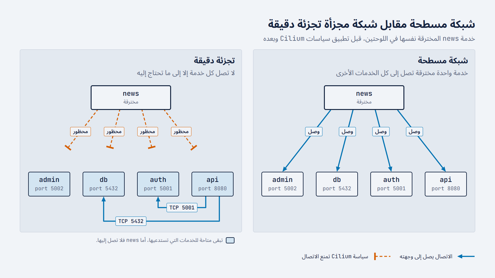
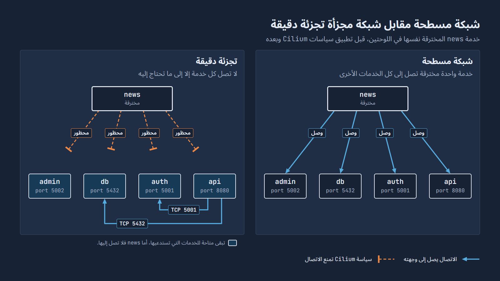
الخطوات المنجزة: 0 من 44 الخطوة التالية: 1.1 نتأكد من أن الـ virtualization مفعّلة
المرحلة 1. نجهّز Windows

1.1 نتأكد من أن الـ virtualization مفعّلة
- نضغط Ctrl+Shift+Esc. في Task Manager ننقر Performance.
- ننقر CPU.
- نقرأ السطر Virtualization تحت الرسم البياني.

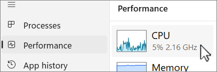

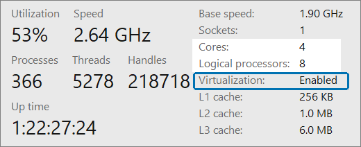
ما يجب أن نراه: Virtualization: Enabled
لم يظهر ما يجب أن نراه؟
السطر يعرض Disabled. نفعّل الـ virtualization من إعدادات الـ firmware (BIOS) في الحاسوب قبل أن نتابع. الدليل الكامل: الفصل 2، «الخطوة 1. نتأكد من أن الـ virtualization مفعّلة».
1.2 نحدّث WSL
WSL هو الجزء من Windows الذي يشغّل Ubuntu.
- نضغط مفتاح Windows ونكتب
powershell. - ننقر بالزر الأيمن على Windows PowerShell ونختار Run as administrator.
- ننقر Yes، ثم نلصق الكتلة.

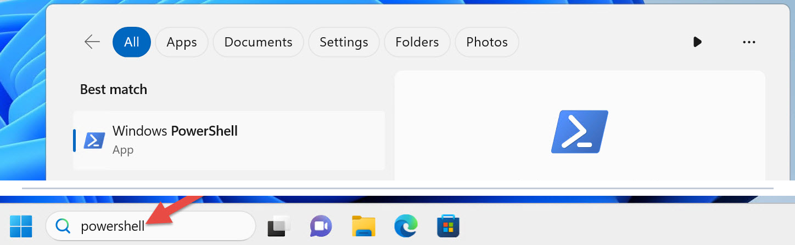

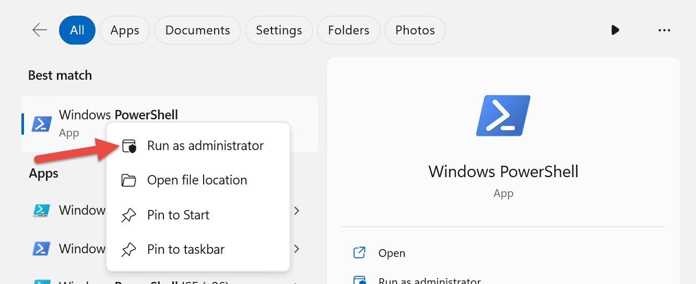
wsl --update
wsl --versionما يجب أن نراه: WSL version: 3.0.5.0 أو رقم أعلى في السطر الأول.
لم يظهر ما يجب أن نراه؟
Invalid command line option: --version معناه أن WSL القديم ما زال يعمل. نشغّل wsl --update مرة أخرى ونعيد تشغيل Windows. وإذا بقي التحديث عند 0% أكثر من عشر دقائق، نضغط Ctrl+C ونشغّل wsl --update --web-download. الدليل الكامل: الفصل 2، «الخطوة 2. نحدّث WSL».
1.3 نستخرج ملفات المشروع
- ننزّل
microseg-ready-files.zipمن صفحة التنزيلات ونحفظه في مجلد Downloads. - ننقر على الملف بالزر الأيمن ونختار Extract All.
- نُبقي المجلد الذي يقترحه Windows وننقر Extract.

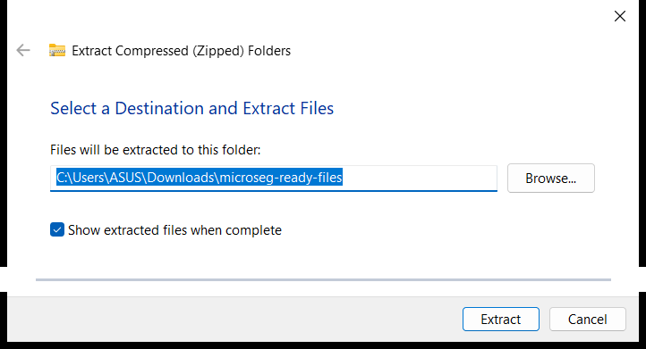
ما يجب أن نراه: مجلد اسمه microseg-ready-files فيه مجلد microseg وملف wslconfig.txt.
لم يظهر ما يجب أن نراه؟
نستخرج الملف المضغوط مرة أخرى إلى Downloads\microseg-ready-files. الخطوات التالية تقرأ الملفات من هناك.
1.4 ننسخ ملف إعدادات WSL
هذا يعطي WSL ذاكرة 10 GB و4 معالجات. نستعمل نافذة المسؤول نفسها.
Copy-Item "$env:USERPROFILE\Downloads\microseg-ready-files\wslconfig.txt" "$env:USERPROFILE\.wslconfig"
wsl --shutdown
Get-Content "$env:USERPROFILE\.wslconfig"ما يجب أن نراه: الإعدادات مطبوعة سطراً بسطر، وmemory=10GB في السطر الثاني.
لم يظهر ما يجب أن نراه؟
Cannot find path معناه أن الملف المضغوط ليس في المكان الذي تضعه فيه الخطوة 1.3. نصلح ذلك ونشغّل الكتلة مرة أخرى. الدليل الكامل: الفصل 3، «منح WSL ذاكرة 10 GB والـ kernel modules التي يحتاجها Cilium».
1.5 نثبّت Ubuntu وننشئ مستخدم Linux
نلصق الكتلة في نافذة المسؤول نفسها. بعدها يطلب Ubuntu ثلاثة أشياء.
wsl --install -d Ubuntu-24.04- نكتب اسم مستخدم بأحرف صغيرة، مثل
ghufran، ونضغط Enter. - نكتب كلمة مرور ونضغط Enter. لا يظهر شيء أثناء الكتابة، ولا حتى نقاط.
- نكتب كلمة المرور نفسها مرة أخرى ونضغط Enter.

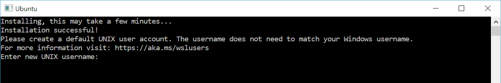
ما يجب أن نراه: Distribution successfully installed، ثم موجّه أوامر ينتهي بـ $. نكتب exit، ونضغط Enter، ونغلق النافذة.
لم يظهر ما يجب أن نراه؟
Changes will not be effective until the system is rebooted معناه أن Windows يحتاج إلى إعادة تشغيل. نعيد تشغيله ونشغّل الأمر نفسه مرة أخرى. وSorry, passwords do not match معناه أن كلمتي المرور اختلفتا، فنكتب y وندخلها مرتين أخريين. والخطأ الذي فيه 0x80370102 معناه أن الـ virtualization معطّلة، فنرجع إلى الخطوة 1.1. الدليل الكامل: الفصل 2، «الخطوة 3. نثبّت Ubuntu 24.04 وننشئ مستخدم Linux».
المرحلة 2. ننسخ المشروع إلى Ubuntu ونثبّت الأدوات
2.1 نفتح Ubuntu ونعرف اسم مستخدم Windows
- نضغط مفتاح Windows ونكتب
ubuntu. - ننقر النتيجة التي في اسمها 24.04. هذه نافذة Ubuntu الرئيسية من الآن فصاعداً.
- نلصق الكتلة.
ls /mnt/c/Users/ما يجب أن نراه: بضعة أسماء مجلدات. واحد منها اسمنا، مثل ASUS. ندوّنه. الأسماء مثل Public وDefault و'All Users' تخص Windows.
لم يظهر ما يجب أن نراه؟
إذا لم تظهر نتيجة Ubuntu في قائمة Start، نفتح نافذة PowerShell عادية ونشغّل wsl -d Ubuntu-24.04 --cd ~. الدليل الكامل: الفصل 2، «الخطوة 4. نفتح Ubuntu terminal».
2.2 ننسخ المشروع إلى Ubuntu
في الكتلة <WinUser>. نستبدله، مع القوسين الزاويين، بالاسم من الخطوة 2.1. نلصق الكتلة في Notepad، ونغيّر الاسم هناك، ثم ننسخها من Notepad.
cp -r /mnt/c/Users/<WinUser>/Downloads/microseg-ready-files/microseg ~/microseg
cd ~/microsegما يجب أن نراه: موجّه الأوامر ينتهي الآن بـ ~/microseg$.
لم يظهر ما يجب أن نراه؟
WinUser: No such file or directory معناه أن <WinUser> ما زال في الأمر. وcp: cannot stat معناه أن الاسم مكتوب بشكل يختلف عن القائمة في الخطوة 2.1. الدليل الكامل: الفصل 2، «الخطوة 7. ننقل ملفاً من Windows إلى Ubuntu».
2.3 نثبّت الأدوات
هذا يثبّت Docker وkind وkubectl وcilium وhubble. يستغرق 5 إلى 10 دقائق. حين يعرض [sudo] password for، نكتب كلمة مرور Ubuntu ونضغط Enter. لا يظهر شيء أثناء الكتابة.
bash install-tools.shما يجب أن نراه: سطر أخير يبدأ بـ DONE. Now close this Ubuntu window.
لم يظهر ما يجب أن نراه؟
آخر سطر يبدأ بـ == يسمّي الجزء الذي فشل. نشغّل bash install-tools.sh مرة أخرى. تكراره آمن. وإذا فشل الجزء نفسه مرتين، ففي الفصل 3 من الدليل الكامل خطوة لكل جزء: «رفع حدود inotify لـ kind nodes» للجزء 1، و«تثبيت curl وjq وpython3-venv» للجزء 2، و«إضافة Docker package repository» و«تثبيت Docker Engine 29» للجزء 3، و«تثبيت kind (v0.33.0)» و«تثبيت kubectl (v1.36.6)» للجزء 4، و«تثبيت الأمر cilium (v0.20.3)» و«تثبيت الأمر hubble (v1.20.4)» للجزء 5، و«إنشاء البيئة الافتراضية لـ Python (.venv)» للجزء 6.
2.4 نعيد تشغيل Ubuntu
نغلق كل نوافذ Ubuntu. نفتح نافذة PowerShell عادية، لا بصلاحيات المسؤول، ونلصق الكتلة.
wsl --terminate Ubuntu-24.04ما يجب أن نراه: The operation completed successfully. ثم نفتح Ubuntu من جديد كما في الخطوة 2.1.
لم يظهر ما يجب أن نراه؟
نشغّل wsl -l -v ونتحقق من أن في القائمة صفاً اسمه Ubuntu-24.04. الدليل الكامل: الفصل 3، «السماح للمستخدم بتشغيل Docker (من دون sudo)».
2.5 نتحقق من المساحة الفارغة على القرص C
df -h /mnt/cما يجب أن نراه: 15G أو أكثر في العمود Avail.
لم يظهر ما يجب أن نراه؟
نفرّغ Recycle Bin ونحذف من Downloads الملفات الكبيرة التي لم نعد نحتاجها. ثم نشغّل الأمر مرة أخرى. الدليل الكامل: الفصل 3، «التحقق من المساحة الفارغة على القرص C».
2.6 نفحص البيئة كلها
يختبر هذا السكربت كل ما ثبّتناه، سطراً لكل فحص.
bash ~/microseg/check-env.shما يجب أن نراه: 14 of 14 checks passed في السطر الأخير.
لم يظهر ما يجب أن نراه؟
ننظر في كل سطر يبدأ بـ FAIL. لفحوص الذاكرة والمعالجات والـ kernel modules نعيد الخطوة 1.4، ثم نفتح Ubuntu من جديد ونعيد تشغيل السكربت. وظهور FAIL في السطر docker works without sudo معناه أن الخطوة 2.4 لم تُنفَّذ بعد. الدليل الكامل: الفصل 3، «فحص البيئة كلها (check-env.sh)»، وفيه جدول يسمّي الخطوة التي نعيدها لكل سطر FAIL.
المرحلة 3. ننشئ الـ cluster
3.1 نشغّل سكربت الإعداد
هذا ينشئ الـ cluster ويثبّت Cilium وHubble. يستغرق 6 إلى 15 دقيقة. الأسطر الحمراء مثل Cilium: 1 errors, 3 warnings طبيعية وهو ينتظر. نتركه حتى يعود موجّه الأوامر.
cd ~/microseg && bash setup.shما يجب أن نراه: قائمة الـ nodes في النهاية، وفيها kind-control-plane وkind-worker وkind-worker2 كلها Ready.
لم يظهر ما يجب أن نراه؟
node(s) already exist for a cluster with the name "kind" أو port is already allocated معناه أن cluster قديماً يعترض الطريق. نشغّل kind delete cluster ثم bash setup.sh مرة أخرى. وإذا توقف بعد 15 دقيقة مع fatal error: all goroutines are asleep - deadlock!، فالـ images الخاصة بـ Cilium ما زالت قيد التنزيل، فلا نحذف الـ cluster. الدليل الكامل: الفصل 4، «تشغيل setup.sh».
3.2 نتحقق من الـ nodes وlabels tier
kubectl get nodes -L tierما يجب أن نراه: الـ nodes الثلاث كلها Ready، وفي العمود TIER القيمة frontend للـ node kind-worker وbackend للـ node kind-worker2.
NAME STATUS ROLES AGE VERSION TIER
kind-control-plane Ready control-plane 5m14s v1.36.4
kind-worker Ready <none> 5m v1.36.4 frontend
kind-worker2 Ready <none> 5m v1.36.4 backendلم يظهر ما يجب أن نراه؟
الـ node التي تعرض NotReady تحتاج إلى دقيقتين أخريين، فننتظر ونشغّل الأمر مرة أخرى. وThe connection to the server localhost:8080 was refused معناه أن setup.sh لم يكتمل. الدليل الكامل: الفصل 4، «التحقق من الـ nodes وlabels tier (kubectl get nodes)».
3.3 نتحقق من Cilium
cilium statusما يجب أن نراه: أربعة أسطر في الأعلى ينتهي كل منها بـ OK.
/¯¯\__/¯¯\ Cilium: OK
\__/¯¯\__/ Operator: OK
/¯¯\__/¯¯\ Envoy DaemonSet: OK
\__/¯¯\__/ Hubble Relay: OKلم يظهر ما يجب أن نراه؟
ننتظر دقيقتين ونشغّل الأمر مرة أخرى. الدليل الكامل: الفصل 4، «التحقق من سلامة Cilium وعنوان DNS في الـ cluster».
المرحلة 4. ننشر البوابة

4.1 نشغّل سكربت النشر
هذا يبني البوابة ويشغّل الـ Pods السبعة الخاصة بها. يستغرق بضع دقائق.
cd ~/microseg && bash deploy.shما يجب أن نراه: جدول فيه سبعة Pods في النهاية، كل منها 1/1 وRunning.
لم يظهر ما يجب أن نراه؟
ERROR: no nodes found for cluster "kind" معناه أن الـ cluster غير موجود، فنشغّل bash setup.sh أولاً. وerror: timed out waiting for the condition ينتهي باسم الـ Pod الذي لم يبدأ، والخطوة 4.2 تعرض حالته. الدليل الكامل: الفصل 6، «الخطوة 5. نشر البوابة».
4.2 ننظر إلى الـ Pods
kubectl -n campus get podsما يجب أن نراه: سبعة Pods، كلها 1/1 وRunning. نهايات الأسماء تختلف على حاسوبنا.
NAME READY STATUS RESTARTS AGE
admin-766cddb668-gr2k8 1/1 Running 0 22s
api-65c5c7d5fd-2qtsk 1/1 Running 0 22s
auth-7fd575594b-2q5bd 1/1 Running 0 22s
db-d7c884fbf-9jdvd 1/1 Running 0 22s
frontend-6d755c977c-rzsg7 1/1 Running 0 22s
news-545758c8c6-2jp4n 1/1 Running 0 22s
ops-56f8b77f6d-hs2zr 1/1 Running 0 22sلم يظهر ما يجب أن نراه؟
ErrImageNeverPull في العمود STATUS معناه أن الـ images غير موجودة في الـ cluster، فنشغّل bash ~/microseg/deploy.sh مرة أخرى. والـ Pod الذي يبقى Pending معناه في الغالب أن node فقدت الـ label tier. الدليل الكامل: الفصل 6، «الخطوة 6. نظرة على الـ Pods».
4.3 نتحقق من أن البوابة تعمل
يسجّل هذا السكربت الدخول باسم طالب، ويختبر ستة أشياء يجب أن تؤديها البوابة.
bash ~/microseg/check-portal.shما يجب أن نراه: PORTAL: 6/6 OK في السطر الأخير.
لم يظهر ما يجب أن نراه؟
FAIL portal page loads (expected '200', got '000') معناه أنه لم يُجب شيء على الـ port 30080، فنتحقق من أن Pod خدمة frontend بحالة 1/1 Running. الدليل الكامل: الفصل 6، «الخطوة 8. كتابة check-portal.sh».
4.4 نصل إلى البوابة من Windows
نستعمل نافذة PowerShell عادية. نُبقي .exe في curl.exe.
curl.exe -s -o NUL -w "%{http_code}\n" http://localhost:30080/ما يجب أن نراه: 200
لم يظهر ما يجب أن نراه؟
000 مع نجاح الخطوة 4.3 معناه أن WSL لا يوصل الـ port إلى Windows. نشغّل wsl --shutdown، ونفتح Ubuntu من جديد، وننتظر حتى تعرض الخطوة 4.2 سبعة Pods بحالة 1/1 Running، ثم نحاول مرة أخرى. والخطأ الأحمر الذي يبدأ بـ Invoke-WebRequest معناه أن .exe سقط من الأمر. الدليل الكامل: الفصل 6، «الخطوة 9. فتح البوابة من Windows».
4.5 ندخل إلى البوابة باسم سارة
- نفتح Edge أو Chrome ونذهب إلى
http://localhost:30080. - نكتب
saraفي اسم المستخدم وsara2026في كلمة المرور. - ننقر Log in.

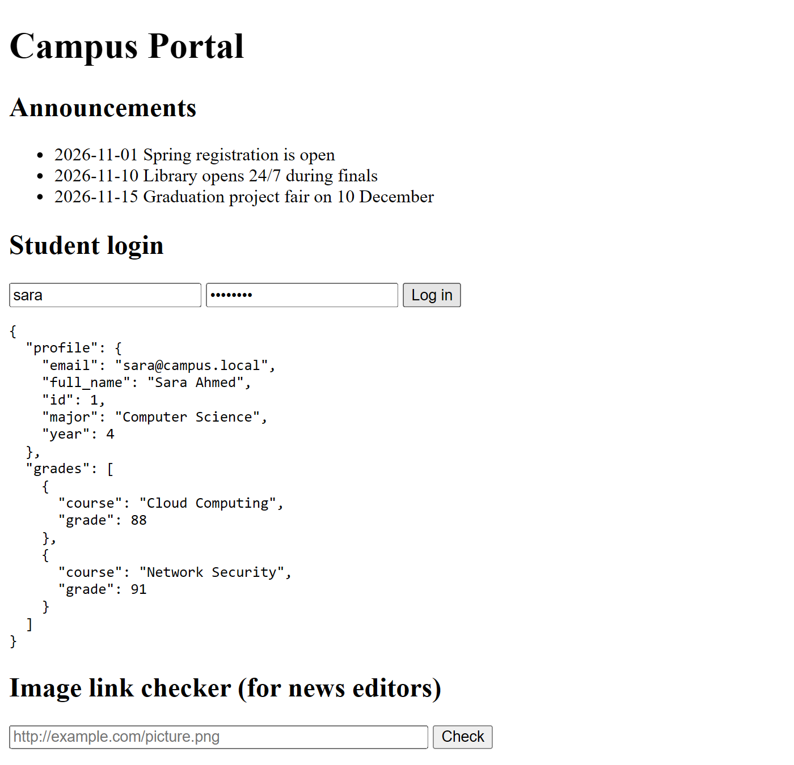
ما يجب أن نراه: الملف الشخصي لـ Sara Ahmed ودرجتان، 88 في Cloud Computing و91 في Network Security.
لم يظهر ما يجب أن نراه؟
Login failed معناه أن كلمة المرور لم تتطابق. هي sara2026 بأحرف صغيرة كلها، وربما ملأ مدير كلمات المرور شيئاً آخر. الدليل الكامل: الفصل 6، «الخطوة 9. فتح البوابة من Windows».
المرحلة 5. نشغّل لوحة التحكم وHubble
تحتاج لوحة التحكم إلى نافذة Ubuntu خاصة بها، وكذلك Hubble. نفتح نافذتين أخريين كما في الخطوة 2.1، ونُبقي النوافذ الثلاث مفتوحة أثناء العمل.
5.1 نشغّل لوحة التحكم
نلصق هذه الكتلة في النافذة الثانية، نافذة لوحة التحكم.
cd ~/microseg/dashboard && ../.venv/bin/python app.pyما يجب أن نراه: سطر فيه Running on http://127.0.0.1:5050، ولا موجّه أوامر بعده. نترك هذه النافذة مفتوحة.
لم يظهر ما يجب أن نراه؟
Address already in use معناه أن لوحة تحكم تعمل أصلاً في نافذة أخرى. نوقفها هناك بـ Ctrl+C، ثم نشغّلها من جديد. وModuleNotFoundError: No module named 'flask' معناه أن الأمر كُتب بشكل مختلف، فننسخه مرة أخرى. الدليل الكامل: الفصل 7، «الخطوة 3. تشغيل لوحة التحكم».
5.2 نتصل بـ Hubble
نلصق هذه الكتلة في النافذة الثالثة، نافذة Hubble.
cilium hubble port-forward &
sleep 5
hubble statusما يجب أن نراه: Connected Nodes: 3/3. وقد يسبقه سطر مثل [1] 2817.
لم يظهر ما يجب أن نراه؟
الخطأ الذي ينتهي بـ connect: connection refused معناه أن النفق لم يُفتح بعد. ننتظر بضع ثوانٍ ونشغّل hubble status مرة أخرى. الدليل الكامل: الفصل 4، «ربط الأمر hubble بـ Hubble Relay (الـ port 4245)».
5.3 نشغّل واجهة Hubble
نلصق هذه الكتلة في نافذة Hubble أيضاً، تحت مخرجات الخطوة 5.2.
cilium hubble ui --open-browser=falseما يجب أن نراه: الأمر يستمر في العمل ولا يعود موجّه الأوامر. نترك هذه النافذة مفتوحة أيضاً.
لم يظهر ما يجب أن نراه؟
الخطأ الذي يذكر الـ port 12000 معناه أن نسخة أقدم تعمل أصلاً. نشغّل pkill -f "cilium hubble ui" في النافذة الرئيسية، ثم نشغّل الأمر هنا مرة أخرى. الدليل الكامل: الفصل 8، «مشاهدة الهجوم على خريطة الخدمات في Hubble».
5.4 نفتح لوحة التحكم
نذهب إلى http://localhost:5050 في متصفح Windows وننتظر بضع ثوانٍ حتى تمتلئ المصفوفة.

ما يجب أن نراه: Policies: OFF في الأعلى و36 of 36 paths reachable فوق المصفوفة.
لم يظهر ما يجب أن نراه؟
إذا لم يصل المتصفح إلى الصفحة، ننظر في نافذة لوحة التحكم. إن عاد موجّه الأوامر فيها، نشغّل لوحة التحكم من جديد كما في الخطوة 5.1. وأقل من 36 مساراً معناه أن أحد الـ Pods غير جاهز أو أن سياسات قديمة مطبّقة. الدليل الكامل: الفصل 7، «الخطوة 9. فتح لوحة التحكم» و«الخطوة 6. اختبار endpoint المصفوفة».
المرحلة 6. نهاجم الشبكة المسطحة
من هنا فصاعداً نكتب كل أوامر Ubuntu في النافذة الرئيسية.

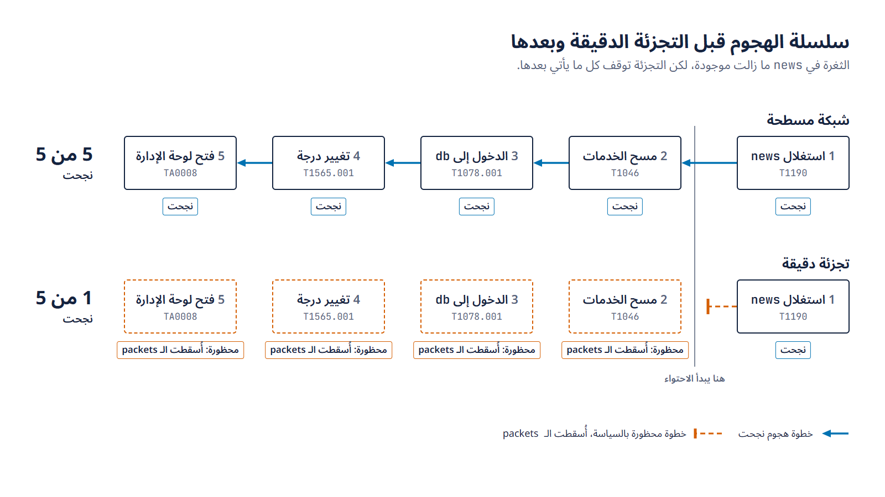
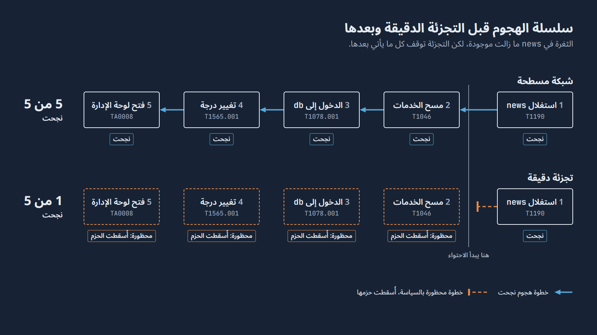
6.1 نشغّل الهجوم من لوحة التحكم
في لوحة التحكم نبحث عن «Attack from the news pod» وننقر Run attack. ينتهي خلال ثوانٍ.

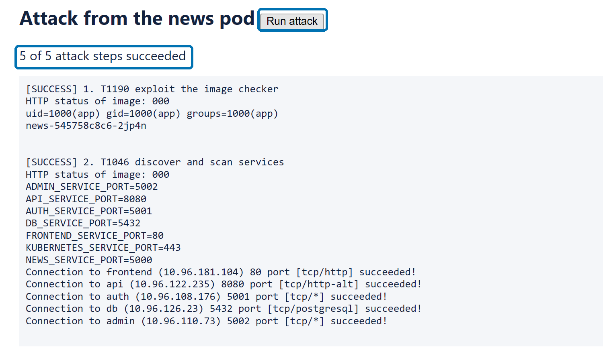
ما يجب أن نراه: 5 of 5 attack steps succeeded
لم يظهر ما يجب أن نراه؟
إذا فشلت كل الخطوات وعرض السجل request failed، فلوحة التحكم لا تصل إلى البوابة. نعيد الخطوة 4.3 ونصلح البوابة أولاً. الدليل الكامل: الفصل 8، «تشغيل الخطوات الخمس من لوحة التحكم».
6.2 نشغّل الخطوة 1 يدوياً
هذا يشغّل الخطوة 1 من الهجوم من Windows، كما يفعل مهاجم من الخارج.
curl.exe -s http://localhost:30080/news/check-image --data-urlencode "url=x; id; hostname"ما يجب أن نراه: uid=1000(app) gid=1000(app) groups=1000(app)، ثم اسم Pod خدمة news.
لم يظهر ما يجب أن نراه؟
غياب أي مخرجات معناه أن البوابة لا تجيب، فنعيد الخطوة 4.4. وإذا كان السطر الوحيد HTTP status of image: 000، فالنص داخل علامتي التنصيص ليس url=x; id; hostname بالضبط. الدليل الكامل: الفصل 8، «الخطوة 1. T1190، تشغيل أمر داخل news».
6.3 نتحقق من درجة عمر
قبل الهجوم كانت درجة عمر في Network Security هي 58.
kubectl -n campus exec deploy/db -- psql -U postgres -d campus -c "SELECT * FROM grades WHERE id = 3"ما يجب أن نراه: صف يعرض فيه عمود الدرجة 95.
3 | 2 | Network Security | 95لم يظهر ما يجب أن نراه؟
الدرجة 58 معناها أن الهجوم لم يصل إلى قاعدة البيانات، فننقر Run attack مرة أخرى ونعيد الأمر. وcontainer not found ("db") معناه أن Pod خدمة db يُستبدل الآن، فننتظر 20 ثانية ونحاول مرة أخرى. الدليل الكامل: الفصل 8، «تشغيل الخطوات الخمس من لوحة التحكم».
6.4 نلتقط لقطات الشاشة لهذه المرحلة
أولاً ننشئ مجلداً للقطات الشاشة.
New-Item -ItemType Directory -Force "$HOME\microseg-evidence"ما يجب أن نراه: جدول قصير يعرض فيه العمود Name الاسم microseg-evidence.
نلتقط كل لقطة شاشة بالطريقة نفسها.
- نضغط Windows+Shift+S ونختار Full screen من شريط الأدوات الصغير في الأعلى.
- ننقر الإشعار الذي يظهر.
- نضغط Ctrl+S، ونكتب
%USERPROFILE%\microseg-evidenceفي شريط العنوان، ونضغط Enter. - نكتب اسم الملف وننقر Save.

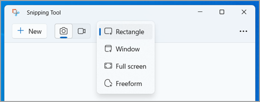
نلتقط الآن هاتين اللقطتين.
E14-attack-flat، لوحة التحكم وهي تعرضPolicies: OFFو36 of 36 paths reachableو5 of 5 attack steps succeeded. نصغّر الصفحة بـ Ctrl مع مفتاح الناقص حتى تظهر الثلاثة كلها.E15-grade-after، نافذة Ubuntu الرئيسية وفيها الدرجة95من الخطوة 6.3.
لم يظهر ما يجب أن نراه؟
إذا لم يظهر إشعار، فقد حفظ Windows الصورة مع ذلك في Pictures > Screenshots. نغيّر اسمها هناك وننقلها إلى microseg-evidence. الدليل الكامل: الفصل 14، «التقاط مخرجات الـ terminal».
المرحلة 7. نفعّل التجزئة الدقيقة للشبكة

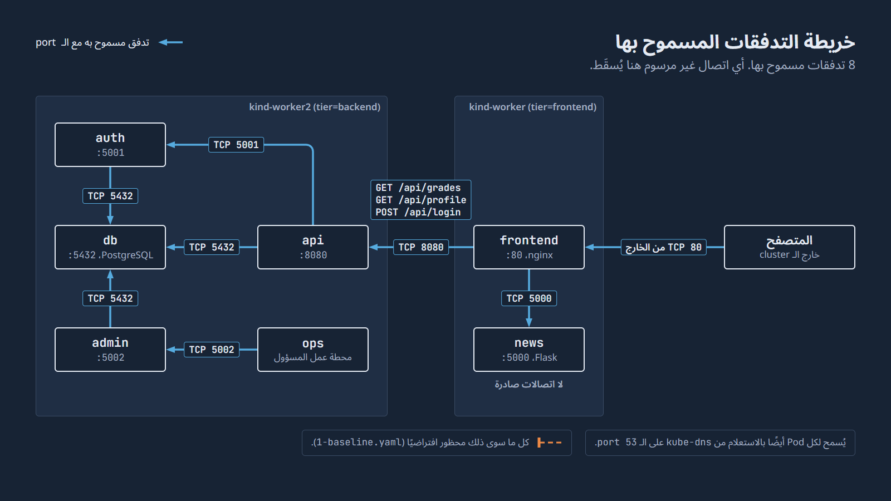
7.1 نعيد ضبط قاعدة البيانات
هذا يعيد درجة عمر إلى 58.
kubectl -n campus rollout restart deployment/db
kubectl -n campus rollout status deployment/db --timeout=120s
sleep 3
kubectl -n campus exec deploy/db -- psql -U postgres -d campus -c "SELECT * FROM grades WHERE id = 3"ما يجب أن نراه: deployment "db" successfully rolled out، ثم الصف وفيه الدرجة 58.
لم يظهر ما يجب أن نراه؟
الخطأ الذي يبدأ بـ psql: error: connection to server on socket معناه أن PostgreSQL كان ما زال يبدأ. ننتظر عشر ثوانٍ ونشغّل السطر الأخير وحده مرة أخرى. الدليل الكامل: الفصل 8، «إرجاع درجة عمر».
7.2 نطبّق ملف الأساس للرفض الافتراضي
هذه السياسات الثلاث تحجب كل شيء ما عدا استعلامات الأسماء وفحوص الجاهزية.
cd ~/microseg
kubectl apply -f k8s/policies/1-baseline.yamlما يجب أن نراه: ثلاثة أسطر تنتهي بـ created، أولها ciliumnetworkpolicy.cilium.io/default-deny created.
لم يظهر ما يجب أن نراه؟
الخطأ الذي يقول إن المسار غير موجود معناه أن سطر cd لم يُنفَّذ، فنلصق السطرين مرة أخرى. والأسطر التي تنتهي بـ unchanged أو configured لا مشكلة فيها. الدليل الكامل: الفصل 10، «تطبيق ملف الأساس وحده: 0 من 36».
7.3 نرى كل المسارات مغلقة
ننتظر نحو عشر ثوانٍ، ثم نعيد تحميل لوحة التحكم بـ F5.
ما يجب أن نراه: Policies: ON (3 policies) في الأعلى و0 of 36 paths reachable فوق المصفوفة.
لقطة الشاشة: نحفظ لوحة التحكم باسم E19-baseline-only.
لم يظهر ما يجب أن نراه؟
إذا بقيت المصفوفة تعرض 36، نشغّل kubectl -n campus get cnp. يجب أن يسرد ثلاث سياسات. الدليل الكامل: الفصل 10، «تطبيق ملف الأساس وحده: 0 من 36».
7.4 نتحقق من أن البوابة محجوبة أيضاً
يستغرق هذا نحو نصف دقيقة، لأن كل فحص ينتظر جواباً لا يأتي أبداً.
bash ~/microseg/check-portal.shما يجب أن نراه: PORTAL: 0/6 OK في السطر الأخير. هذا متوقع، لأن كل شيء مرفوض.
لم يظهر ما يجب أن نراه؟
PORTAL: 6/6 OK معناه أن المطبّق أكثر من ملف الأساس. نزيل السياسات الزائدة بالأمر kubectl delete -f ~/microseg/k8s/policies/2-allow.yaml. الدليل الكامل: الفصل 10، «تطبيق ملف الأساس وحده: 0 من 36».
7.5 نطبّق سياسات الـ workloads
هذه السياسات السبع تعيد فتح الاتصالات التي تحتاجها البوابة فقط.
cd ~/microseg
kubectl apply -f k8s/policies/2-allow.yaml
sleep 8
kubectl -n campus get cnpما يجب أن نراه: سبعة أسطر created، ثم جدول فيه 10 سياسات، وفي العمود VALID من كل صف True.
لم يظهر ما يجب أن نراه؟
أقل من 10 صفوف معناه أن أحد الملفين غير مطبّق، فنعيد الخطوة 7.2 ثم هذه الخطوة. الدليل الكامل: الفصل 10، «تطبيق 2-allow.yaml: 10 سياسات».
7.6 نتحقق من أن البوابة عادت تعمل
bash ~/microseg/check-portal.shما يجب أن نراه: PORTAL: 6/6 OK
لقطة الشاشة: نحفظ نافذة Ubuntu الرئيسية باسم E20-portal-segmented.
لم يظهر ما يجب أن نراه؟
نشغّل hubble observe --namespace campus --verdict DROPPED --last 20، فهو يسمّي الاتصال المحجوب. الدليل الكامل: الفصل 10، «البوابة تعمل من جديد: 6/6».
7.7 نرى المسارات المصممة وحدها مفتوحة
نعيد تحميل لوحة التحكم بـ F5 وننتظر المصفوفة.

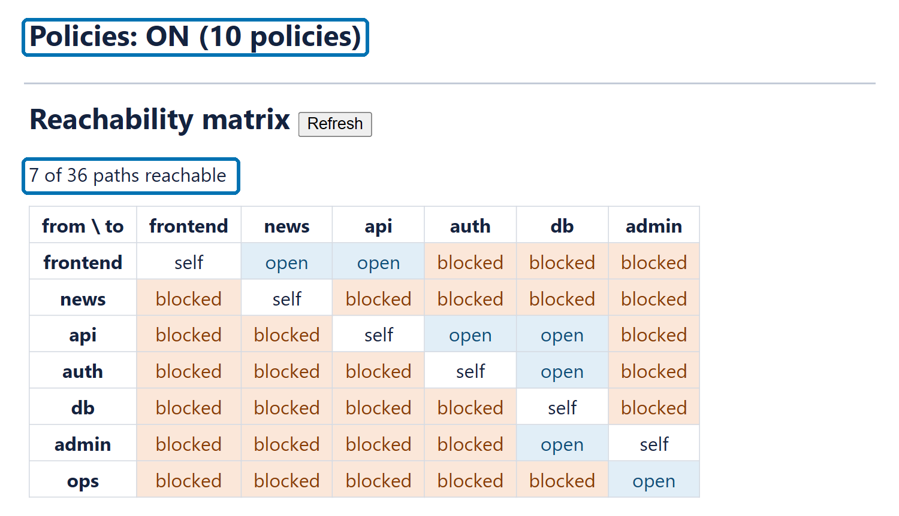
ما يجب أن نراه: Policies: ON (10 policies) و7 of 36 paths reachable. صف news كله محجوب.
لم يظهر ما يجب أن نراه؟
العدد 36 معناه أن السياسات غير مفعّلة. والعدد الأكبر من 7 يدل على سياسة متبقية. وفي الحالتين يجب أن يسرد kubectl -n campus get cnp 10 سياسات بالضبط. الدليل الكامل: الفصل 10، «المصفوفة: 7 من 36».
7.8 نشغّل الهجوم مرة أخرى
ننقر Run attack في لوحة التحكم. يستغرق الآن نحو 18 ثانية، لأن كل خطوة محجوبة تنتظر انتهاء مهلتها.

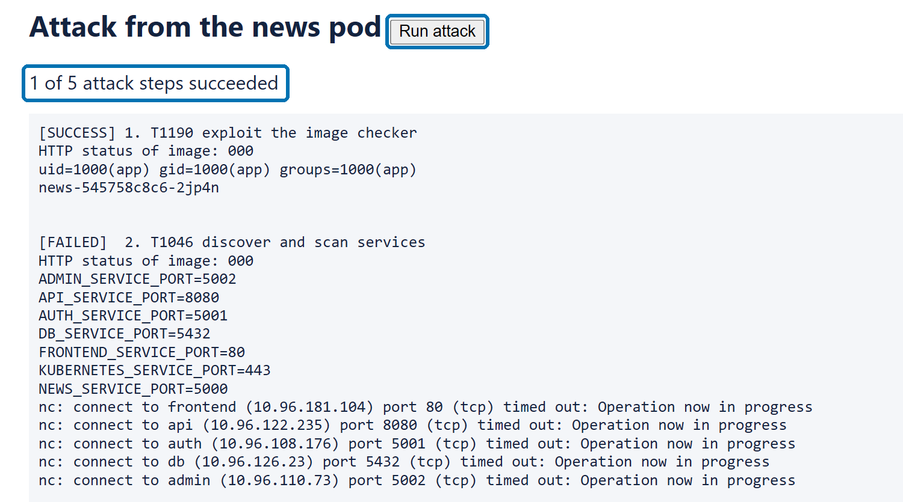
ما يجب أن نراه: 1 of 5 attack steps succeeded
لقطة الشاشة: نحفظ لوحة التحكم باسم E23-attack-segmented، وعلى الشاشة Policies: ON (10 policies) و7 of 36 paths reachable و1 of 5 attack steps succeeded معاً. نصغّر الصفحة إذا لم تتسع لها.

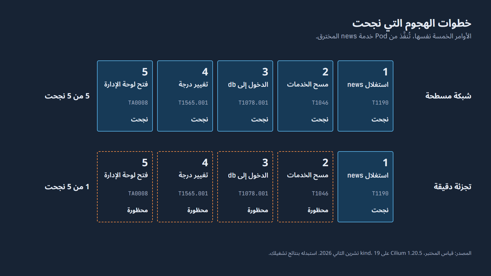
لم يظهر ما يجب أن نراه؟
5 of 5 معناه أن السياسات غائبة، فنتحقق بالأمر kubectl -n campus get cnp. و0 of 5 معناه أن frontend لا يصل إلى news. الدليل الكامل: الفصل 10، «الهجوم مرة أخرى: 1 من 5».
7.9 نجرّب مسار التصدير المنسي
على الشبكة المسطحة يعطي هذا العنوان درجات كل الطلاب من دون تسجيل دخول.
curl.exe -s -i http://localhost:30080/api/exportما يجب أن نراه: HTTP/1.1 403 Forbidden في السطر الأول وAccess denied في النهاية.
لقطة الشاشة: نحفظ نافذة PowerShell باسم E24-export-403.
لم يظهر ما يجب أن نراه؟
HTTP/1.1 200 OK معناه أن قاعدة HTTP في سياسة api غير مفعّلة. وHTTP/1.1 504 Gateway Time-out معناه أن frontend لا يصل إلى api أصلاً. الدليل الكامل: الفصل 10، «مسار التصدير المنسي يجيب الآن بـ 403».
المرحلة 8. نجمع الأدلة في Hubble
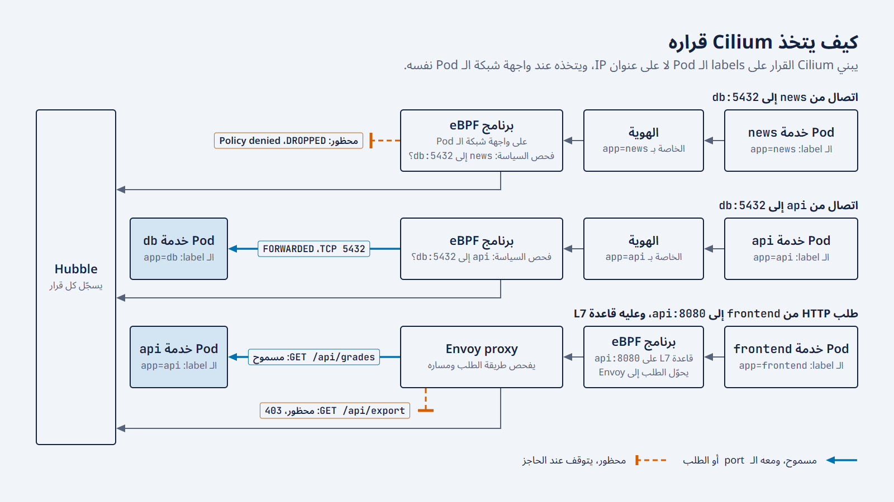

8.1 نولّد حركة مرور جديدة
يحتفظ Hubble بالاتصالات الحديثة فقط. ننقر Run attack في لوحة التحكم، وننتظر 1 of 5 attack steps succeeded، ثم نلصق الكتلة.
bash ~/microseg/check-portal.shما يجب أن نراه: PORTAL: 6/6 OK
لم يظهر ما يجب أن نراه؟
سطر FAIL معناه أن اتصالاً تحتاجه البوابة محجوب. الدليل الكامل: الفصل 11، «حركة مرور جديدة: الهجوم وفحوص البوابة».
8.2 نقرأ إسقاطات Pod خدمة news
نشغّل هذا الأمر خلال دقيقة أو دقيقتين من الخطوة 8.1.
hubble observe --from-pod campus/news --verdict DROPPED --last 10ما يجب أن نراه: أسطر تبدأ بعد الوقت بـ campus/news- وتنتهي بـ Policy denied DROPPED. أسماء الـ Pods والأرقام تختلف عندنا.
Nov 19 20:43:39.887: campus/news-545758c8c6-2jp4n:55292 (ID:53922) <> campus/db-887596757-wzmtj:5432 (ID:13907) Policy denied DROPPED (TCP Flags: SYN)لقطة الشاشة: نحفظ نافذة Ubuntu الرئيسية باسم E26-drops-from-news.
لم يظهر ما يجب أن نراه؟
غياب أي مخرجات معناه أن الهجوم صار أقدم مما يحتفظ به Hubble، فنعيد الخطوة 8.1 ونشغّل هذا الأمر بعدها مباشرة. و4245: connect: connection refused معناه أن نافذة Hubble أُغلقت، فنشغّل cilium hubble port-forward & مرة أخرى. الدليل الكامل: الفصل 11، «إسقاطات Pod news، من النظرة الواسعة إلى الضيقة».
8.3 نقارن news وapi عند قاعدة البيانات
hubble observe --to-pod campus/db --last 12ما يجب أن نراه: أسطر news تنتهي بـ Policy denied DROPPED بجانب أسطر api تنتهي بـ to-endpoint FORWARDED، وكلها إلى Pod خدمة db نفسه على الـ port 5432.
Nov 19 20:43:45.283: campus/api-65c5c7d5fd-2qtsk:55286 (ID:6935) -> campus/db-887596757-wzmtj:5432 (ID:13907) to-endpoint FORWARDED (TCP Flags: SYN)لم يظهر ما يجب أن نراه؟
إذا كانت كل الأسطر تقول DROPPED، فلم تصل إلى db حركة مسموح بها مؤخراً. نشغّل bash ~/microseg/check-portal.sh ونعيد الأمر. الدليل الكامل: الفصل 11، «port واحد وهويتان».
8.4 ننظر في واجهة Hubble
- نفتح
http://localhost:12000في متصفح Windows ونختارcampusللـ namespace. - نكتب
pod=newsفي خانة التصفية في الأعلى. - ننقر Run attack في لوحة التحكم، ثم نعود إلى هذا التبويب.

ما يجب أن نراه: صفوف جديدة في الجدول تحت الخريطة، مصدرها news، وفي العمود Verdict القيمة dropped.
لقطة الشاشة: نحفظ الصفحة باسم E30-hubble-map-segmented.
لم يظهر ما يجب أن نراه؟
إذا تعذّر الوصول إلى الصفحة، ننظر في نافذة Hubble. إن عاد موجّه الأوامر فيها، نشغّل cilium hubble ui --open-browser=false هناك مرة أخرى. الدليل الكامل: الفصل 11، «واجهة Hubble: التدفقات نفسها على شكل خريطة».
المرحلة 9. نقيس زمن الاستجابة
9.1 نشغّل اختبار زمن الاستجابة
يستغرق هذا نحو 10 دقائق. نوصل الحاسوب بالشاحن، ونغلق تبويبي لوحة التحكم وواجهة Hubble في المتصفح، ونترك الحاسوب حتى يعود موجّه الأوامر.
cd ~/microseg && .venv/bin/python measure.pyما يجب أن نراه: ملخص في النهاية يبدأ بـ Mean of the run medians:. أرقامنا تختلف عن هذه، لذلك ندوّن أسطرنا الستة.
Mean of the run medians:
/news no-policies 2.66 ms (stdev 0.98)
/news policies 2.19 ms (stdev 0.28)
/news overhead -0.47 ms (-17.7 %)
/api/grades no-policies 29.08 ms (stdev 3.12)
/api/grades policies 32.23 ms (stdev 2.31)
/api/grades overhead 3.15 ms (10.8 %)لقطة الشاشة: نحفظ نافذة Ubuntu الرئيسية باسم E31-measure.

لم يظهر ما يجب أن نراه؟
ModuleNotFoundError: No module named 'requests' معناه أن الأمر لم يبدأ بـ .venv/bin/python. وerror: the path "k8s/policies/" does not exist معناه أننا لم نكن في ~/microseg. و403 Client Error يوقف الاختبار عمداً. نطبّق السياسات بالأمر kubectl apply -f ~/microseg/k8s/policies/، ونعيد الخطوة 7.6، ثم نشغّل الاختبار من جديد. الدليل الكامل: الفصل 12، «تشغيل measure.py».
9.2 نتحقق من ملف النتائج ومن السياسات
cd ~/microseg
wc -l results/latency.csv
kubectl -n campus get cnp --no-headers | wc -lما يجب أن نراه: 21 results/latency.csv، ثم 10.
لم يظهر ما يجب أن نراه؟
No such file or directory معناه أن الاختبار توقف قبل نهايته، فنعيد الخطوة 9.1. وعدد السياسات 0 معناه أنه توقف والسياسات محذوفة، فنشغّل kubectl apply -f ~/microseg/k8s/policies/. الدليل الكامل: الفصل 12، «ملف النتائج صفاً صفاً» و«عدّ السياسات وقواعد L7».
قبل أن نكتب عن الأرقام نقرأ الفصل 12، «الضوضاء: متى يكون الفرق حقيقياً».
المرحلة 10. نحفظ النتائج
10.1 ننسخ ملف النتائج إلى مجلد الأدلة
نستبدل <WinUser> كما في الخطوة 2.2.
cp ~/microseg/results/latency.csv /mnt/c/Users/<WinUser>/microseg-evidence/ما يجب أن نراه: لا مخرجات، ويعود موجّه الأوامر.
لم يظهر ما يجب أن نراه؟
WinUser: No such file or directory معناه أن <WinUser> ما زال في الأمر. الدليل الكامل: الفصل 14، «نسخ التقاطات Windows إلى المشروع».
10.2 نراجع قائمة الأدلة
Get-ChildItem "$HOME\microseg-evidence" -Nameما يجب أن نراه: الأسماء العشرة في هذا الجدول.
| الملف | أُخذ في | ما يعرضه |
|---|---|---|
E14-attack-flat.png |
الخطوة 6.4 | الشبكة المسطحة، 36 من 36 مساراً و5 من 5 خطوات هجوم |
E15-grade-after.png |
الخطوة 6.4 | درجة عمر بعد تغييرها إلى 95 |
E19-baseline-only.png |
الخطوة 7.3 | الرفض الافتراضي وحده، 0 من 36 مساراً |
E20-portal-segmented.png |
الخطوة 7.6 | PORTAL: 6/6 OK والتجزئة الدقيقة مفعّلة |
E23-attack-segmented.png |
الخطوة 7.8 | 7 من 36 مساراً و1 من 5 خطوات هجوم |
E24-export-403.png |
الخطوة 7.9 | رفض /api/export بالرد 403 Forbidden |
E26-drops-from-news.png |
الخطوة 8.2 | أسطر Policy denied DROPPED في Hubble |
E30-hubble-map-segmented.png |
الخطوة 8.4 | واجهة Hubble وتدفقات news بحالة dropped |
E31-measure.png |
الخطوة 9.1 | زمن الاستجابة مع السياسات ومن دونها |
latency.csv |
الخطوة 10.1 | كل تشغيلات اختبار زمن الاستجابة، 20 صفاً تحت سطر العناوين |
لم يظهر ما يجب أن نراه؟
نعيد التقاط اللقطة الناقصة في الحالة التي يذكرها العمود «أُخذ في». الدليل الكامل: الفصل 14، «جلسة الالتقاط، جزءاً بعد جزء».
حين يتعطل شيء: الأعراض والحلول
| ما نراه | ما نفعله | الدليل الكامل |
|---|---|---|
| بعد إعادة تشغيل Windows لا تجيب البوابة أو لوحة التحكم أو Hubble | نفتح Ubuntu وننتظر حتى يعرض kubectl -n campus get pods سبعة Pods بحالة 1/1 Running. ثم نعيد المرحلة 5. |
الفصل 13، «بعد إعادة تشغيل Windows» |
permission denied مع /var/run/docker.sock |
نغلق كل نوافذ Ubuntu، ونشغّل wsl --terminate Ubuntu-24.04 في PowerShell، ثم نفتح Ubuntu من جديد. |
الفصل 3، «السماح للمستخدم بتشغيل Docker (من دون sudo)» |
يفشل check-env.sh في فحوص الذاكرة أو المعالجات أو الـ kernel modules |
نتحقق من الملف بالأمر Get-Content "$env:USERPROFILE\.wslconfig" في PowerShell، ونعيد الخطوة 1.4 إن كان خاطئاً، ثم نشغّل wsl --shutdown ونفتح Ubuntu من جديد. |
الفصل 3، «إعادة تشغيل WSL ثم التحقق مما حصل عليه» |
Read-only file system أو Input/output error مع أي أمر |
القرص C: ممتلئ. نوفّر 15 GB على الأقل، ونشغّل wsl --shutdown، ونفتح Ubuntu من جديد، ثم نشغّل cd ~/microseg && kind delete cluster && bash setup.sh. |
الفصل 4، «تشغيل setup.sh» |
port is already allocated أو node(s) already exist من setup.sh |
نشغّل kind delete cluster، ثم bash setup.sh مرة أخرى. |
الفصل 4، «تشغيل setup.sh» |
4245: connect: connection refused من hubble |
توقف نفق Hubble. نشغّل cilium hubble port-forward &، وننتظر خمس ثوانٍ، ثم نحاول مرة أخرى. |
الفصل 11، «أولاً، التحقق من أنّ Hubble يجيب» |
| تعرض الشبكة المسطحة أقل من 36 مساراً مفتوحاً | ما زالت سياسات قديمة مطبّقة. نشغّل kubectl delete -f ~/microseg/k8s/policies/ ونعيد تحميل لوحة التحكم. |
الفصل 8، «هل المختبر يعمل، وهل ما زالت الشبكة مسطحة؟» |
| لا ينفع أي شيء آخر | نغلق نافذتي لوحة التحكم وHubble، ونشغّل cd ~/microseg && kind delete cluster && bash setup.sh && bash deploy.sh، ويستغرق نحو 15 دقيقة، ثم نتابع من المرحلة 5. |
الفصل 13، «إعادة البناء من الصفر، الحل الأخير» |